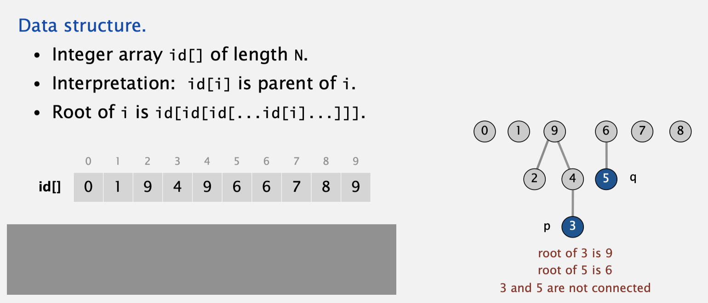

本文是数据结构预算法复习系列的第一篇博文，会介绍写作该系列博文的原因
本文复习了并查集的概念，基础的API，良好的实现(路径压缩与权重)，简单的应用和变式
相关代码
写作本篇博文的原因
- 生活所迫
- 懂的都懂，IT行业从业者(或者是考研保研)，跑不了的
- 数据结构与算法是大学生活里花费的时间很多的部分，复习一下，也算是对自己的大学生涯有个交代
- 三次元的生活真的无聊，找点代码写，嘿嘿(
难道不能写工程项目吗？质问！)
并查集的概念与基础API
并查集的概念
假设拥有N个元素1…N，我们需要对其做两种基础的操作:
- 宣告某两个元素a, b处在同一个等价类里
- 判断某两个元素a, b是否在一个等价类里
用于处理这种问题，提供这两种操作接口的数据结构，可以被称为并查集
并查集基础的API
1
2
3
4
| interface UnionFind {
void union(int a, int b);
boolean isConnected(int a, int b);
}
|
良好的实现
良好的实现往往将一个等价类以树的形式进行组织，使用一个数组int[] parent，parent[i]记录了元素i的父亲节点
如下图

isConnected(a, b)接口即判断a和b是否在同一棵树内(是否有同样的根)union(a, b)接口即需要将a所属的树归并到b所属的树下，或者将b所属的树归并到a所属的树下- 提高执行速度，就是想办法降低树的高度
路径压缩
路径压缩基本上能够完全解决并查集的接口执行速度问题
其基本思想是:
在沿着某条路径查询到a元素的根之后，将这条路径上所有的元素父亲，都直接设为根节点
这样，在以后查询的时候，查找到这条路径上的元素，只需要一次向上查询，就可以找到根节点了
路径压缩实现
1
2
3
4
5
6
7
8
9
10
11
12
13
14
15
16
17
18
19
20
21
22
23
24
25
26
27
28
| public class PathCompressUnionFindImpl implements UnionFind {
int[] parent;
public PathCompressUnionFindImpl(int n) {
parent = new int[n];
for (int i = 0; i < parent.length; ++i) {
parent[i] = i;
}
}
private int find(int a) {
if (parent[a] == a) {
return a;
}
return parent[a] = find(parent[a]);
}
@Override
public void union(int a, int b) {
int rootA = find(a), rootB = find(b);
parent[rootA] = rootB;
}
@Override
public boolean isConnected(int a, int b) {
return find(a) == find(b);
}
}
|
加权并查集
虽然路径压缩基本能够解决并查集的执行速度问题，但是还有一个解决方案值得我们思考
加权并查集，其实是基于这样的观察:
在代表一个等价类的树的高度快速增长时，往往是由于将高的树合并成为了矮的树的子树
如果每次合并，都将矮的树合并成为高的树的子树，那么树的高度增长就会减缓
从数学的角度来看，减缓的原因是
每次当树的高度增加1，就意味着树的节点总数至少翻倍了
那么一共有N个节点，树的高度最多也就是lg N
加权并查集实现
1
2
3
4
5
6
7
8
9
10
11
12
13
14
15
16
17
18
19
20
21
22
23
24
25
26
27
28
29
30
31
32
33
34
35
36
| public class WeightedUnionFindImpl implements UnionFind {
int[] parent, size;
private int find(int a) {
while (parent[a] != a) {
a = parent[a];
}
return a;
}
public WeightedUnionFindImpl(int n) {
parent = new int[n];
size = new int[n];
for (int i = 0; i < n; ++i) {
parent[i] = i;
size[i] = 1;
}
}
@Override
public void union(int a, int b) {
int rootA = find(a), rootB = find(b);
if (size[rootA] > size[rootB]) {
parent[rootB] = rootA;
size[rootA] += size[rootB];
} else {
parent[rootA] = rootB;
size[rootB] += size[rootA];
}
}
@Override
public boolean isConnected(int a, int b) {
return find(a) == find(b);
}
}
|
并查集的简单应用
贴两道OJ题目，都是简单练手的
洛谷P3367 模板题
洛谷UVA10583 简单变式
并查集的简单变式
等价类的个数
也就是树的根节点的个数，一个节点a是根节点当且仅当parent[a] == a
1
2
3
4
5
6
7
8
9
| int nClass() {
int nClass = 0;
for (int i = 0; i < parent.length; ++i) {
if (parent[i] == i) {
nClass++;
}
}
return nClass;
}
|
可以维护的等价类性质
比如:
- 给定元素
a，求a所在等价类的元素个数
- 给定元素
a，求a所在等价类的最大值
- 给定元素
a，求a所在等价类的最小值
这类性质只需要新开一个数组，并在union时进行维护就可以了:
1
2
3
4
5
6
7
| void union(int a, int b) {
parent[rootA] = rootB;
size[rootB] += size[rootA];
maximum[rootB] = Math.max(maximum[rootA], maximum[rootB]);
minimum[rootB] = Math.max(minimum[rootA], minimum[rootB]);
}
|